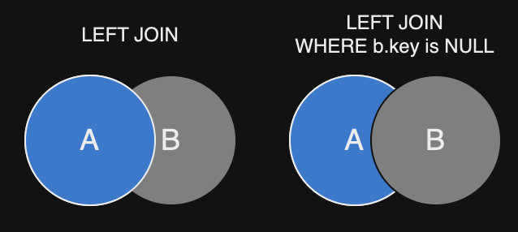
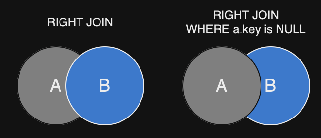
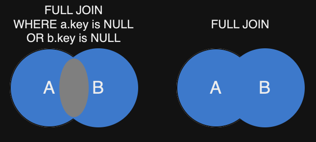
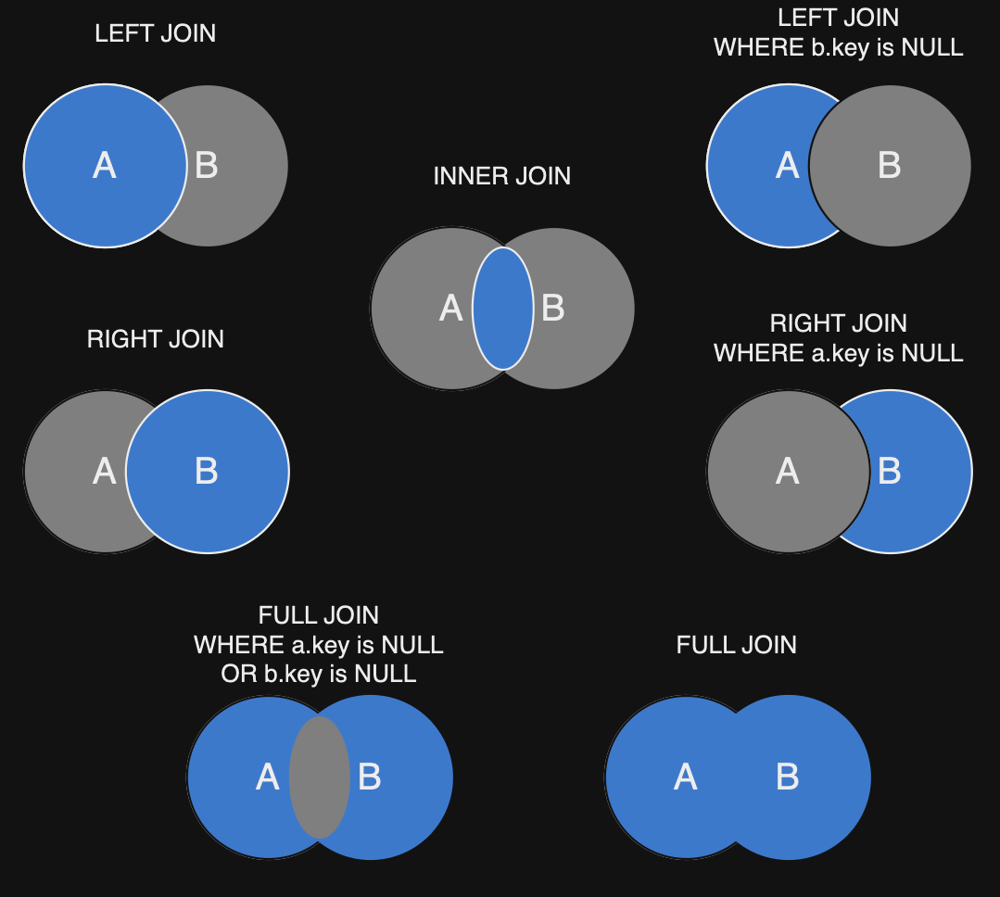

JOIN в SQL
Операторов JOIN в SQL четыре основных типов: LEFT, RIGHT, INNER, FULL. Они используются для объединения строк из двух или более таблиц на основе связанного столбца между ними, например внешнего ключа (FOREIGN KEY).
Примеры:-
Таблицы для примеров
//Departments department_id department_name 1 'HR' 2 'IT' 3 'Sales' 4 'CEO' //Employees employee_id name department_id 1 'Ivan Ivanov' 1 2 'Alex Tinkov' 2 3 'Bread Pit' NULL 4 'Koly Koly' 1 5 'Sergei Kalyaev' 4 6 'Nekit Brown' NULL -
LEFT JOIN
Результат
SELECT Employees.employee_id, Employees.name, Departments.department_name FROM Employees LEFT JOIN Departments ON Employees.department_id = Departments.department_idemployee_id name department_name 1 'Ivan Ivanov' 'HR' 4 'Koly Koly' 'HR' 2 'Alex Tinkov' 'IT' 5 'Sergei Kalyaev' 'CEO' 3 'Bread Pit' NULL 6 'Nekit Brown' NULL -
LEFT JOIN WHERE b.key is NULL
Результат
SELECT Employees.employee_id, Employees.name, Departments.department_name FROM Employees LEFT JOIN Departments ON Employees.department_id = Departments.department_id WHERE Departments.department_id is NULLemployee_id name department_name 3 'Bread Pit' NULL 6 'Nekit Brown' NULL - LEFT JOIN возвращает все строки из левой таблицы и совпадающие строки из правой таблицы. Если совпадения нет,
то в результирующем наборе будут строки из левой таблицы с NULL значениями для всех столбцов из правой таблицы.
Синия часть - это то, что мы получаем в выводе. На схеме Круг А - Employees, Круг B - Departments.

-
RIGHT JOIN
Результат
SELECT Departments.department_id, Departments.department_name, Employees.employee_id, Employees.name FROM Employees RIGHT JOIN Departments ON Employees.department_id = Departments.department_iddepartment_id department_name employee_id name 1 'HR' 1 'Ivan Ivanov' 2 'IT' 2 'Alex Tinkov' 1 'HR' 4 'Koly Koly' 4 'CEO' 5 'Sergei Kalyaev' 3 'Sales' NULL NULL -
RIGHT JOIN WHERE a.key is NULL
Результат
SELECT Departments.department_id, Departments.department_name, Employees.employee_id, Employees.name FROM Employees RIGHT JOIN Departments ON Employees.department_id = Departments.department_id WHERE Employees.department_id is NULLdepartment_id department_name employee_id name 3 'Sales' NULL NULL - RIGHT JOIN возвращает все строки из правой таблицы и совпадающие строки из левой таблицы.
Если совпадения нет, то в результирующем наборе будут строки из правой таблицы с NULL
значениями для всех столбцов из левой таблицы.

-
INNER JOIN
Результат
SELECT Employees.employee_id, Employees.name, Departments.department_name FROM Employees INNER JOIN Departments ON Employees.department_id = Departments.department_idemployee_id name department_name 1 'Ivan Ivanov' 'HR' 2 'Alex Tinkov' 'IT' 4 'Koly Koly' 'HR' 5 'Sergei Kalyaev' 'CEO' - INNER JOIN возвращает только те строки, которые имеют совпадение в обеих таблицах.
-
FULL JOIN
Результат
SELECT Employees.employee_id, Employees.name, Departments.department_name FROM Employees FULL JOIN Departments ON Employees.department_id = Departments.department_idemployee_id name department_name 1 'Ivan Ivanov' 'HR' 2 'Alex Tinkov' 'IT' 3 'Bread Pit' NULL 4 'Koly Koly' 'HR' 5 'Sergei Kalyaev' 'CEO' 6 'Nekit Brown' NULL NULL NULL 'Sales' -
FULL JOIN WHERE a.key is NULL or b.key is NULL
Результат
SELECT Employees.employee_id, Employees.name, Departments.department_name FROM Employees FULL JOIN Departments ON Employees.department_id = Departments.department_id WHERE Employees.department_id is NULL OR Departments.department_id is NULLemployee_id name department_name 3 'Bread Pit' NULL 6 'Nekit Brown' NULL NULL NULL 'Sales' - FULL JOIN возвращает все строки, когда есть совпадение в одной из таблиц. Если совпадения нет,
то результирующий набор будет содержать NULL значения для всех столбцов таблицы, в которой нет совпадений.

- Вся схема JOIN's

В `LEFT JOIN WHERE b.key is NULL`, Выводится только та часть A, где нет совпадений с B
В `RIGHT JOIN WHERE a.key is NULL`, Выводится только та часть B, где нет совпадений с A
RIGHT JOIN и LEFT JOIN зеркальны
В `FULL JOIN WHERE a.key is NULL OR b.key is NULL`, Выводится только те части A и B, где нету совпадений
Используемые команды:
- SELECT - Выбрать что-то, откуда-то
- FROM name - Из таблицы/базы данных с именем name
- ON - Используется для установления связи между объектами
- WHERE - Оператор для добавления условий